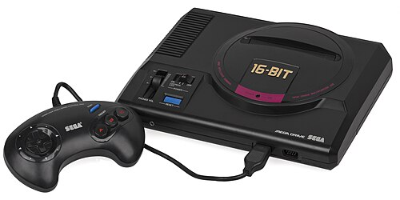

Sega Genesis
The Sega Genesis, known as the Mega Drive outside North America, is a 16-bit fourth generation home video game console developed and sold by Sega. It was Sega's third console and the successor to the Master System. Sega released it in 1988 in Japan as the Mega Drive, and in 1989 in North America as the Genesis. In 1990, it was distributed as the Mega Drive by Virgin Mastertronic in Europe, Ozisoft in Australasia, and Tectoy in Brazil. In South Korea, it was distributed by Samsung Electronics as the Super Gam*Boy and later the Super Aladdin Boy.